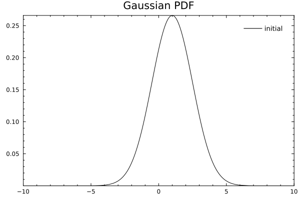
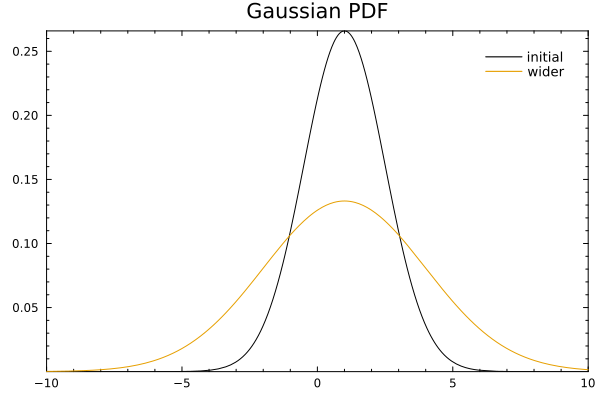
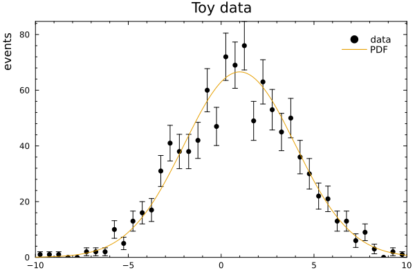
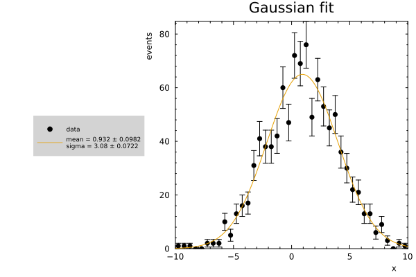

RooFit Basics
This tutorial follows the same first steps as a typical RooFit example: create variables, build a PDF, generate toy data, fit the model, and draw the result. The ROOT RooFit manual describes this as building a model from small mathematical objects; RooFitLite keeps the same idea in ordinary Julia types.
using RooFitLite
using Minuit2
using Plots
using Random: seed!
theme(:boxed)
seed!(12345)Random.TaskLocalRNG()Define an observable and parameters
RealVar stores a name, current value, allowed range, and optional binning. The observable x is binned because we will use it for histograms and plots.
x = RealVar(:x, 0.0, limits=(-10.0, 10.0), nbins=40)
mean = RealVar(:mean, 1.0, limits=(-10.0, 10.0))
sigma = RealVar(:sigma, 1.5, limits=(0.1, 10.0))
gauss = Gaussian(:gauss, x, mean, sigma)Gaussian{gauss} PDF with parameters [:mean, :sigma]Evaluate and plot the PDF
PDFs can be called like functions. Loading Plots activates the plotting extension, so the same PDF can also be displayed directly.
gauss(0.0)
plot(gauss; title="Gaussian PDF", label="initial")
Changing a parameter updates the PDF because the model stores the variable objects.
sigma.value = 3.0
plot!(gauss; label="wider")
Generate toy data
generate draws from the current model. With nbins set on the observable, the dataset knows how to make a useful default histogram.
data = generate(gauss, 1_000)
plot(data; title="Toy data", label="data")
plot!(gauss; label="PDF")
Fit the model
Loading Minuit2 activates the fitTo extension. The returned FitResult stores the dataset, model, and Minuit engine; fitted values and errors are written back to the model parameters.
result = fitTo(gauss, data)
mean.value, mean.error, sigma.value, sigma.error
plot(result; title="Gaussian fit")